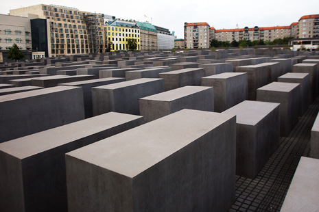

The Memorial to the Murdered Jews of Europe (German: Denkmal für die ermordeten Juden Europas), also known as the Holocaust Memorial (German: Holocaust-Mahnmal), is a memorial in Berlin to the Jewish victims of the Holocaust, designed by architect Peter Eisenman and engineer Buro Happold. It consists of a 19,000 m2 (4.7-acre) site covered with 2,711 concrete slabs or "stelae", arranged in a grid pattern on a sloping field. The stelae are 2.38 m (7 ft 10 in) long, 0.95 m (3 ft 1 in) wide and vary in height from 0.2 to 4.7 m (7.9 in to 15 ft 5.0 in). They are organized in rows, 54 of them going north–south, and 87 heading east–west at right angles but set slightly askew. An attached underground "Place of Information" (German: Ort der Information) holds the names of approximately 3 million Jewish Holocaust victims, obtained from the Israeli museum Yad Vashem.